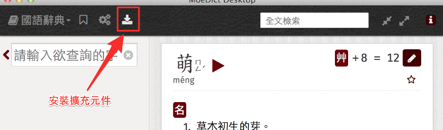
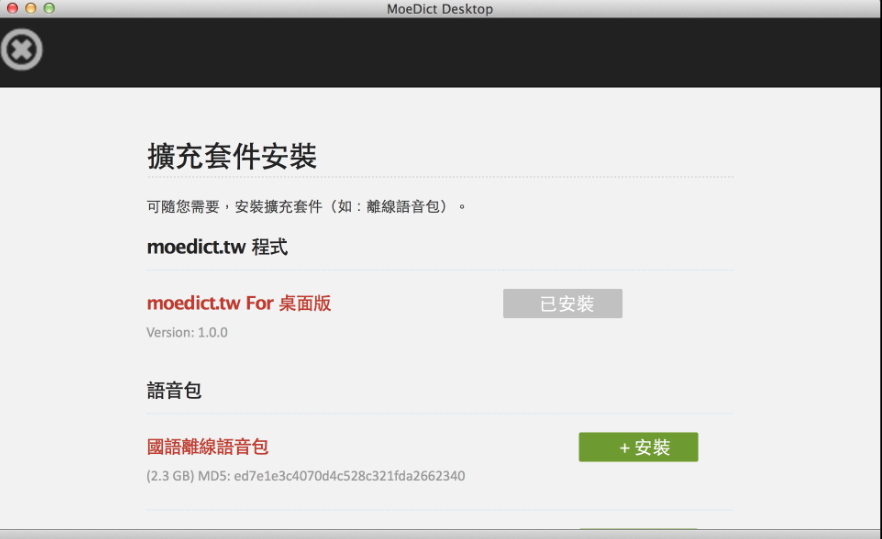
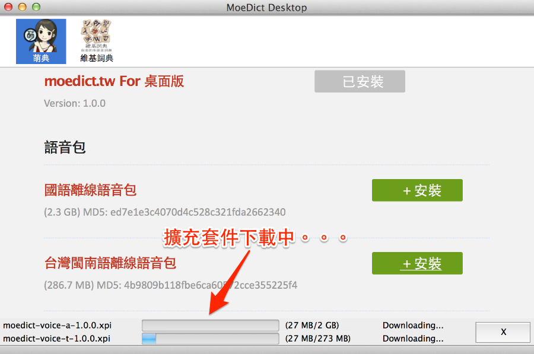
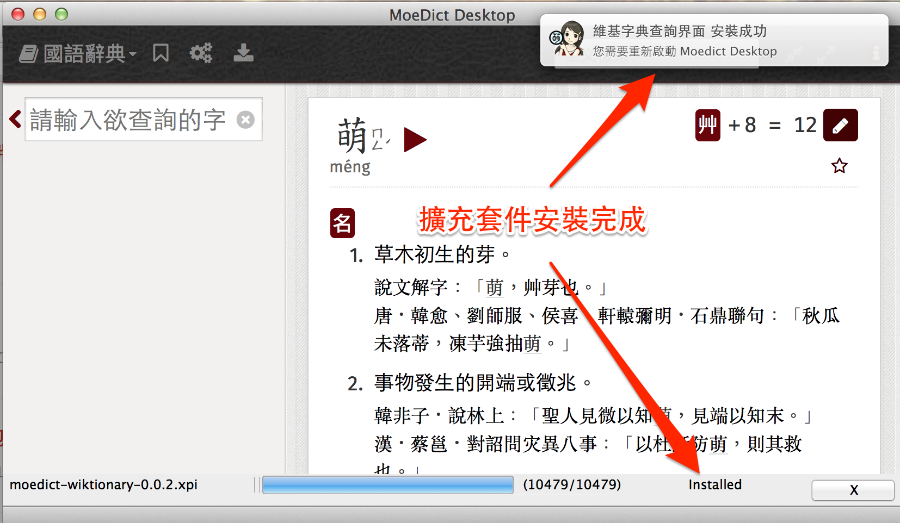

萌典桌面版- 功能簡介
桌面版本可離線使用，無需網路環境也可使用
萌典共收錄十六萬筆國語、兩萬筆台語、一萬四千筆客語條目，並支援「自動完成」功能及「%_ *? ^.$」等萬用字元。 定義裡的每個字詞都可以點擊連到說明。 源碼、其他平台版本、API 及原始資料等，均可在 3du.tw 取得。
軟體主畫面
完美結合 https://moedict.tw/ 所有功能，提供您各作業系統離線使用。


擴充套件安裝
直接於萌典字典查詢頁面，點選安裝圖示(1.1.0版新增)。

線上擴充套件瀏覽
灰色按鍵為已安裝。綠色按鍵為未安裝或是線上有新的版本(1.1.0版新增)。

安裝擴充套件
點選安裝會立即為您下載及安裝。(1.1.0版新增)。

安裝完成會利用系統通知功能提示。(1.1.0版新增)。

進階擴充套件管理
可由 Tools>Add-ons Manager 管理您的擴充套件

萌典桌面版是基於 [XULApp StarterKit] 開發。
感謝 #g0v.tw 頻道內所有協助開發的朋友們。
CC0 1.0 公眾領域貢獻宣告
作者 林慶忠(racklin@gmail.com) 在法律許可的範圍內，拋棄此著作依著作權法所享有之權利，包括所有相關與鄰接的法律權利，並宣告將該著作貢獻至公眾領域。